abstract: Pablo Picasso is very well-known for his abstract art.
acquire: The young player acquired a reputation for scoring 2 goals for his team in the final.
cognitive: The serious accident caused him cognitive problems and memory loss.

consequence: Unhealthy eating habits can lead to serious health consequences.

clumsy: He is so clumsy that he hurts himself while riding a bicycle.
fond: Peter is very fond of pop music. He listens to it everyday.
gesture: In this round of the game, you just can use your gestures to describe the words to your partner.

imagination: All his stories are based on his imagination. They are not true.
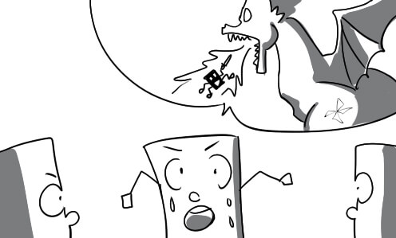
immature: Peter always looks immature although he is already 21 years old.

imitate: "Don't imitate what we do on this TV show at home."
independent: Peter is very independent. He never asks anyone to help him do his work.
irresponsible: The irresponsible guy made a mess in the kitchen and ran away.

look back: Henry looks back at his lovely childhood and feels happy.

mature: Peter is a young man mature beyond his years.
peer: Jimmy always wants to be better than his peers.

period: Although Peter is very rich, he never forgets his periods of poverty.

phase: Peter never forgets that terrible phase of his career when he was just a petty employee.
rebellious: The company's ridiculous policy made me become rebellious and quit.
remind: The policeman reminded him that drunk driving was not permitted.

reminisce: The old man reminisced about his glorious youth.
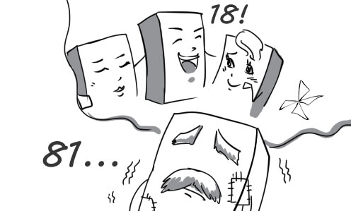
significant: It is significant to wear warm clothes in wintertime.
skill: It takes skill to perform such a dangerous show like this.

toddler: The mother is teaching her toddler how to walk.
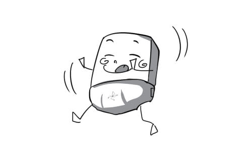
tolerant: Mary is very tolerant of her son although he causes her many problems.
transition: The policeman is in transition from his current duty to another.
typically: Typically, Peter was late for class because he overslept.

visualize: It is not easy to visualize one's face just by touching it.

adequate: His amount of assets is totally adequate for him to live well for the rest of his life.
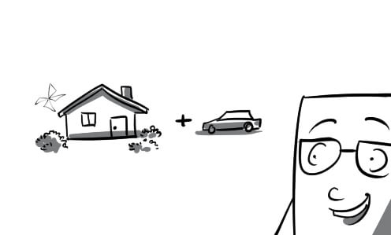
aggravate: I don't need his help. He would do nothing but aggravate the situation.
booming: Mr Obama had a booming career when he was elected as president of the US.
catastrophic: The radiation contamination had catastrophic effects on the ecosystem.

compete: Peter is competing fiercely with his rival for the champion title.
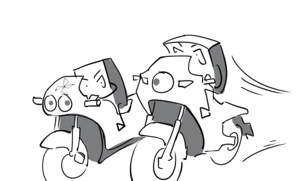
compromise: Finally, they compromised on how to divide profits.
decent: Mr Green is a decent man who earns respect from everyone.
deteriorate: Mary is angry to find out that the purse she bought yesterday is on sale. It deteriorates her purse.

dilemma: His dilemma was whether to go to the left or to go to the right.

double-edged: Carrying a torch can be double-edged. It will make you look more impressive but it is very dangerous as well.
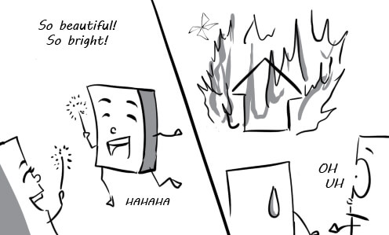
enhance: This highway project will enhance our city's image.
exacerbate: "Stop fixing the electrical wires. You just exacerbate the problem."

exclude: This store is open every day, Sundays excluded.

flourish: Ho Chi Minh city has continued to flourish in spite of the financial crisis.
isolate: The patient will be isolated in order to prevent contagion.
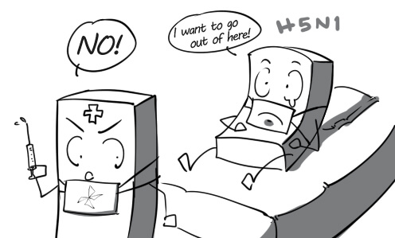
linger: Henry still lingered on his bed, even when he was late.
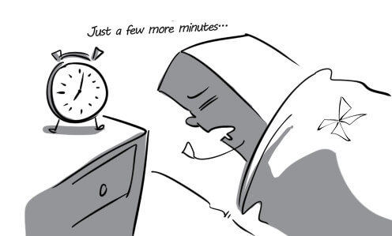
long-sighted: With his long-sighted vision, the CEO choose the perfect place for a new factory building.
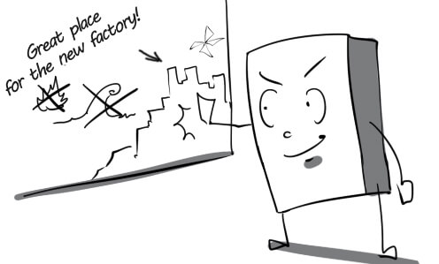
long-term: The huge and solid building is suitable for long-term development.
megacity: Tokyo is a megacity with a population of 13 million people.
migrant: There are thousands of migrants from Eastern Europe rushing to the UK every year.

modify: You should modify the amount of chili in the recipe, it’s too hot.

obstacle: We couldn't reach our destination on time because of some obstacles.

overcome: He has overcome many difficulties to become the winner.

overpriced: All the items at this shop are overpriced.

overworked: Peter has been overworked lately because of his company's labour shortage.

population: Rapid population growth is one of the biggest problems of Vietnam.
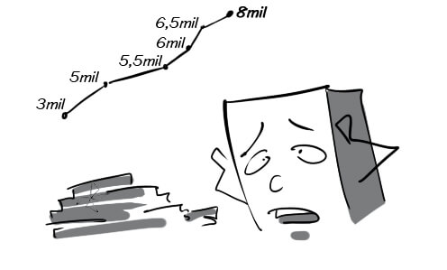
poverty: There are many people living in poverty in Africa.

pressing: Wildfire is the most pressing problem in summertime.

reform: The company decided to reform the customer service to make its clients more content.

regulate: You should regulate your eating habits if you don't want to gain weight.
remedy: We need a lot of money to remedy the house that we broke.
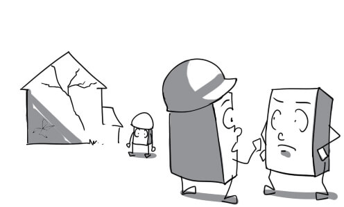
rural: My grandfather used to live in a remote rural area.
setback: The stormy weather was a serious setback to the traffic.
slum: There are many people living in slums with poor quality housing and sanitation.
staggering: The staggering discount program surprised many customers.

tackle: The police are trying their best to tackle the traffic jam.

tolerate: "How can you tolerate the noise from the construction noise?"
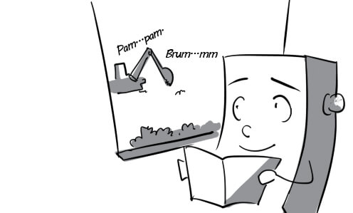
transform: The rural area was transformed into a busy city thanks to foreign investments.

worsen: Irresponsible pedestrians worsened the traffic jam.

ability: With his exceptional ability, Peter won all the competitions that he took part in.

adolescent: Adolescents tend to be very competitive. They always want to be better than the others.
behavior: He is always on his best behaviour when communicating with his clients.

childhood: One of my favourite activities from my childhood is playing games with my friends.

concept: Jess has created a new and lively concept for illustration for flashcard blueup.

develop: Jimmy's friends always make fun of him because he develops more slowly than them.
grow: There's nothing that makes parents happier than watching their children grow.

height: Mary measures her son's height every month.
infancy: Chandler has a younger brother who is in his infancy.

knowledge: Everyone is amazed with his knowledge of mathematics.

master: After many years of practice, John becomes a master of juggling.

memory: After the car accident, John suffered from memory loss.

milestone: The athlete considers winning the Olympic gold medal as a milestone in his career.
mind: Peter always keeps his mind on how to make as much money as possible.
patient: You have to be very patient in order to solve this puzzle.

rate: "What is his rate of work per hour? 20 pictures an hour."
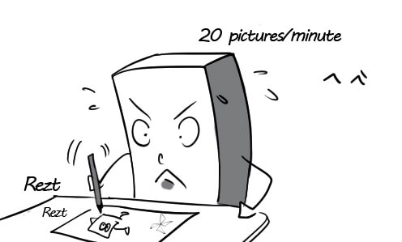
remember: He didn't remember where he had left his wallet.

stage: The CEO was just a petty employee in the early stages of his career.

address: I still cannot find Jack's house although I have his address.

adjust: He askes them to adjust the position of the wardrobe so that the room can look bigger.
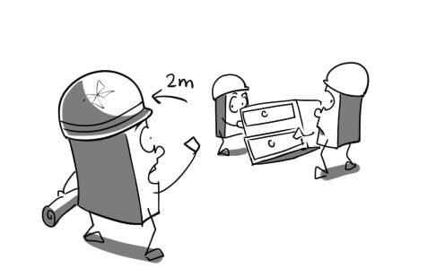
basic: Using cash is the basic kind of payment in Vietnam.

benefit: A clean environment is of great benefit to our health.

cause: The police arrested the man who caused the car accident.
challenge: It is such a big challenge to clear mess left by floodwaters.
compound: It is very dangerous to compound unknown chemicals.
crowded: All the stores are crowded on Black Friday.
deal: The security guards know how to deal with ones who doesn't obey the regulations.

developing: There are more and more buildings in this developing city.
difficulty: Vehicles have a lot of difficulties in circulating in rush hour.
face: The burglar was so scared when he faced the strong policeman.
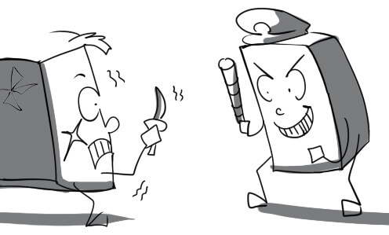
identify: He looked so different from the photo on his identity card, which made it hard to identify him.

improve: The government implemented a national plan to improve public health.

include: Mary wonders if VAT was included in this price yet.

issue: The managers still couldn't reach a compromise on this issue.
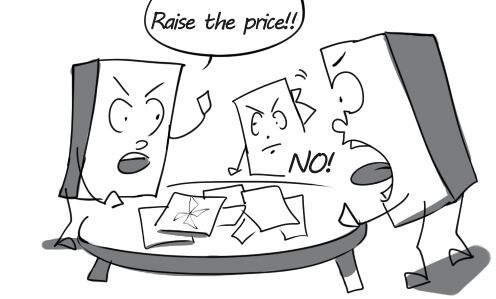
present: The professor is presenting his lecture to the students.

raise: The government decided to raise taxes by 20%.

resolve: The CEO has to resolve the issue quickly because the employees are getting angry.

short-sighted: Short-sighted projects of buildings has very bad influences on the traffic of the city.

short-term: Discount is just effective in short-term marketing.